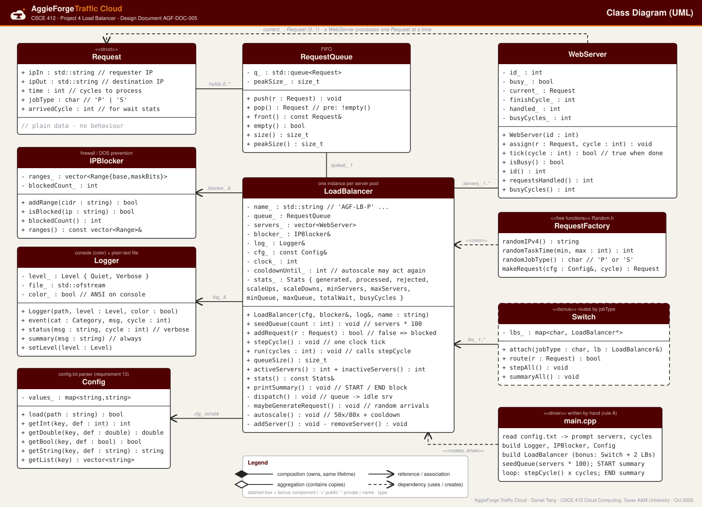
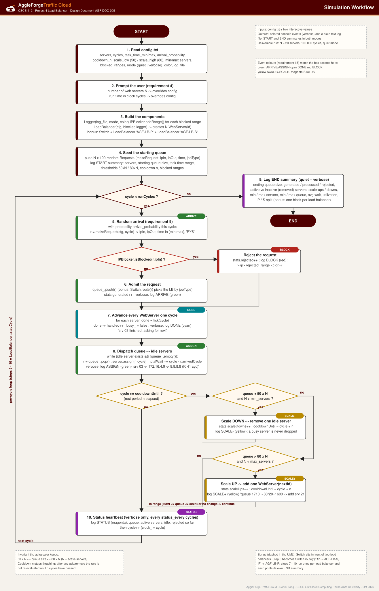

1. Overview
AggieForge Traffic Cloud is a C++ simulation of the load balancer that sits in front of a large company's web-server farm. Requests arrive from random source IP addresses, each one needing a random number of clock cycles of work, and the load balancer's job is to hand every request to a free web server as quickly as possible while keeping just enough servers switched on. The simulation is driven by a single integer clock: every tick the balancer admits any new arrivals, lets each web server make one cycle of progress, dispatches queued requests to servers that have gone idle, and then decides whether to grow or shrink the pool.
The system is balanced when the number of waiting requests stays between 50 × N and 80 × N, where N is the number of active web servers. Below the lower bound the farm is paying for idle capacity, so one server is removed; above the upper bound requests are waiting too long, so one server is added. After either change the balancer rests for n cycles before re-checking, which stops it from thrashing. Everything that defines a run (thresholds, task-time range, arrival rate, rest period, blocked IP ranges, logging mode) comes from a configuration file so that experiments never require a recompile.
What the simulation must do
- Take the number of web servers and the run time in clock cycles from the user; start with a full queue of
servers × 100requests. - Generate requests with a random requester IP, destination IP, processing time and job type (
'P'processing or'S'streaming), and keep injecting new ones at random times. - Run web servers that process one request for its full duration and then ask for the next one.
- Autoscale the server pool with the 50×/80× rule and a cooldown of
ncycles. - Block requests from configured IP ranges (firewall / DOS prevention) and count the rejections.
- Write a colour-coded event stream in verbose mode and a START/END summary in both quiet and verbose mode, to the console and to a plain-text log file.
- Bonus: a
Switchthat routes streaming jobs to one load balancer and processing jobs to another, each with its own statistics.
2. Data structures
Request — a struct
A request is plain data with no behaviour, so it is a struct: ipIn (requester
IPv4 address as a string), ipOut (destination address), time (integer clock cycles
of work), jobType ('P' or 'S') and arrivedCycle, the
clock value when it was created. The last field is not in the assignment text; it is added so the balancer
can report the average time a request waited in the queue in the end summary.
RequestQueue — a FIFO
The queue wraps std::queue<Request> and exposes only push, pop,
front, empty, size and peakSize. First-in-first-out is the
right policy because every request is equally important and the balancer must never starve an old request in
favour of a new one. Wrapping the STL container (instead of using it directly) gives one place to record the
peak queue depth and keeps the load balancer's code independent of the container choice.
3. Class diagram (UML)

The LoadBalancer is the hub. It owns its RequestQueue and its
vector<WebServer> (composition — they live and die with the balancer), while it only
references the IPBlocker, Logger and Config. That split is
deliberate: the requirement that "multiple load balancers can be created" means two balancers must be able to
share one firewall, one log file and one configuration while each keeps a private queue and server pool.
WebServer holds at most one Request at a time; RequestQueue holds many.
main.cpp creates and drives everything and is written by hand as required.
4. Classes, responsibilities and interfaces
Each class has one job. The tables list the public operations with their inputs and outputs, which is the contract Part 2 will implement.
4.1 WebServer
Processes exactly one request at a time. It has no knowledge of the queue or of other servers; the balancer feeds it.
| Operation | Input | Output / effect |
|---|---|---|
WebServer(id) | integer id (1-based, printed in logs as srv 03) | idle server |
assign(r, cycle) | a Request, current clock | stores the request, sets finishCycle_ = cycle + r.time, becomes busy |
tick(cycle) | current clock | adds one busy cycle; returns true exactly once, on the cycle the request completes, and frees the server (it "asks for the next request") |
isBusy(), id() | — | state queries used by dispatch() and the logger |
requestsHandled(), busyCycles() | — | counters for the utilization figure in the end summary |
4.2 LoadBalancer
Owns the clock, the queue and the server pool for one pool of servers; generates arrivals, dispatches, autoscales and keeps statistics. Everything it needs from outside is injected through the constructor so several instances can coexist.
| Operation | Input | Output / effect |
|---|---|---|
LoadBalancer(cfg, blocker, log, name) | Config&, IPBlocker&, Logger&, display name (e.g. AGF-LB-P) | creates cfg.servers idle WebServers, clock = 0 |
seedQueue(count) | number of requests (servers × 100) | pushes that many random requests with arrivedCycle = 0 |
addRequest(r) | a Request | false and rejected++ if blocker.isBlocked(r.ipIn); otherwise pushes it and returns true |
stepCycle() | — | one clock tick: maybeGenerateRequest() → tick every server → dispatch() → autoscale() → status heartbeat → clock_++ |
run(cycles) | run length | calls stepCycle() that many times |
queueSize(), activeServers(), inactiveServers() | — | live state for the status line and the demo |
stats() | — | read-only Stats: generated, processed, rejected, scale-ups/downs, min/max servers, min/max queue, total wait, busy cycles |
printSummary() | — | writes the START block (before the loop) or END block (after) through the logger |
private dispatch() | — | while an idle server exists and the queue is not empty: pop → assign → log ASSIGN |
private maybeGenerateRequest() | — | with probability arrival_probability builds a random request and calls addRequest |
private autoscale() | — | if clock_ ≥ cooldownUntil_: queue < 50×N → removeServer(); queue > 80×N → addServer(); either way cooldownUntil_ = clock_ + n |
private addServer() / removeServer() | — | push a new WebServer(nextId) / erase an idle server (a busy one is never dropped; if all are busy the removal is deferred to the next check), respecting min_servers / max_servers; log SCALE+ / SCALE- |
4.3 IPBlocker — firewall / DOS prevention
| Operation | Input | Output / effect |
|---|---|---|
addRange(cidr) | a range such as 10.0.0.0/8 or 192.168.100.0/24 | true if parsed; stores base address and mask bits |
isBlocked(ip) | dotted IPv4 string | true if the address falls in any stored range (bitwise compare after converting to a 32-bit integer); increments the blocked counter |
blockedCount(), ranges() | — | for the summary and the START block |
4.4 Logger
Single sink for all output. Writes coloured text (ANSI escape codes) to the console and the same text without colour codes to the log file, so the submitted log stays readable.
| Operation | Input | Output / effect |
|---|---|---|
Logger(path, level, color) | log-file path, Quiet or Verbose, colour on/off | opens the file, writes the branded header |
event(category, msg, cycle) | event category (ARRIVE, ASSIGN, DONE, BLOCK, SCALE+, SCALE-), text, clock | verbose only: one line [cycle 412] [BLOCK] … coloured by category |
status(msg, cycle) | text, clock | verbose only: periodic STATUS heartbeat |
summary(msg) | text | always: START/END summary lines, console and file |
4.5 Config
| Operation | Input | Output / effect |
|---|---|---|
load(path) | path to config.txt | true on success; parses key = value lines, ignores blanks and # comments |
getInt / getDouble / getBool / getString(key, default) | key name and fallback | typed value, or the fallback when the key is missing (so a partial file still runs) |
getList(key) | key name | comma-separated values split into a vector (used for blocked_ranges) |
4.6 RequestFactory free functions (Random.h)
randomIPv4() → dotted string; randomTaskTime(min, max) → integer in the configured
range; randomJobType() → 'P' or 'S' with equal probability;
makeRequest(cfg, cycle) → a complete Request. These are small, self-contained helpers,
which is exactly the category of code the project rules allow to be AI-assisted once the design is fixed.
They use one std::mt19937 engine seeded once so a run is reproducible when a seed is given in the config.
4.7 Switch (bonus)
| Operation | Input | Output / effect |
|---|---|---|
attach(jobType, lb) | 'P' or 'S', a LoadBalancer& | registers the balancer for that job type |
route(r) | a Request | forwards to the balancer registered for r.jobType; returns its addRequest result |
stepAll(), summaryAll() | — | ticks every attached balancer in lock-step; prints one END block per balancer so the statistics stay separate |
When the Switch is enabled, random arrivals are generated by main and routed through the Switch instead of inside each balancer, so the two pools see the correct job mix.
5. Workflow

Start-up (steps 1–4)
main loads config.txt, then prompts for the two interactive inputs the assignment
requires — number of web servers and run time in cycles — which override the file. It constructs the
Logger, loads every blocked_ranges entry into the IPBlocker, and builds the
LoadBalancer (or, for the bonus, a Switch with one balancer for 'P' and one
for 'S'). seedQueue(servers × 100) fills the starting queue, and the START summary records
the server count, starting queue size, task-time range, thresholds, cooldown and blocked ranges so the log is
self-describing.
The per-cycle loop (steps 5–10 = LoadBalancer::stepCycle)
- Arrival ARRIVE — with probability
arrival_probabilitya new random request is created this cycle. - Firewall BLOCK —
IPBlocker.isBlocked(ipIn); a hit is counted as rejected and logged, and the request is discarded. Otherwise it joins the queue (bonus: the Switch picks the queue by job type). - Servers tick DONE — every busy server advances one cycle; a server whose
finishCycle_is reached logs completion and becomes idle, i.e. asks for the next request. - Dispatch ASSIGN — queued requests are popped FIFO onto idle servers until one side runs out. Wait time (
cycle − arrivedCycle) is accumulated here. - Autoscale SCALE± — only when the cooldown has expired: queue below 50×N removes one idle server, above 80×N adds one; either action sets
cooldownUntil = cycle + n. Inside the band nothing happens. - Heartbeat STATUS — in verbose mode a status line every
status_everycycles (never every cycle, or a 100 000-cycle run would be unreadable); then the clock advances.
Ordering matters: servers tick before dispatch so a server that finishes this cycle picks up new work in the same cycle, and autoscaling runs after dispatch so it judges the queue that is genuinely still waiting.
Shutdown (step 9)
When cycle == runCycles the END summary is written in both modes: ending queue size, requests
generated / processed / rejected, active servers and servers removed, scale-ups / downs, min and max servers,
min and max queue depth, average wait and server utilization, plus the P/S split. This block is the
"load balancer log" deliverable for the 20-server, 100 000-cycle quiet-mode run.
6. Design choices
- Cooldown
nafter every scaling action. Adding a server does not shrink the queue instantly, and removing one does not grow it instantly. Without a rest period the balancer would add and remove servers on consecutive cycles (thrashing).nis configurable so experiments can show the trade-off between responsiveness and stability. - Hard
min_servers/max_serversbounds. The 50×/80× rule alone could scale to zero servers when the queue empties, or without limit under a flood; bounds keep the simulation (and the "company") within a sane budget. - Never remove a busy server. Scale-down takes an idle server; if every server is busy the removal waits for the next check. No request is silently dropped by scaling — the only discarded requests are firewall rejections, and those are counted.
- Configuration file, not constants. Every tunable (thresholds, task-time range, arrival probability,
n, bounds, blocked ranges, mode, colour, log path, status interval, RNG seed) lives inconfig.txt, satisfying "configurable without editing code" and making the experiments in §8 a matter of editing one file. - Quiet vs verbose logging. Quiet prints only the START and END summaries — the deliverable log. Verbose adds the per-event stream and the periodic status line for the demo. The level is a constructor argument of
Logger, so noif (verbose)clutter in the balancer. - Colour by event type. ARRIVE / ASSIGN green, DONE cyan, BLOCK red, SCALE+ / SCALE- yellow, STATUS magenta. Colours go to the console only; the file gets plain text.
- Firewall at admission time. Blocking happens before a request ever touches the queue, so a DOS flood from a blocked range costs one comparison per request and never consumes server capacity. CIDR ranges are stored as (base, mask) integers so the check is a single bitwise AND.
- Dependency injection for multiple balancers.
LoadBalancertakes itsConfig,IPBlockerandLoggerby reference and owns only its queue and servers. Two balancers therefore share the firewall and the log but keep separate statistics — exactly what the bonusSwitchneeds. - Request is a struct, queue is a FIFO wrapper. Plain data where there is no behaviour; a thin wrapper where the container choice should stay hidden and a peak-size counter is useful.
7. Configuration file and log layout
Planned config.txt
# config.txt - AggieForge Traffic Cloud
servers = 20
cycles = 100000
initial_multiplier = 100 # start queue = servers * 100
task_time_min = 3
task_time_max = 80
arrival_probability = 0.6 # new request per cycle
cooldown_n = 50 # rest after add/remove
scale_low = 50 # per-server lower bound
scale_high = 80 # per-server upper bound
min_servers = 1
max_servers = 200
blocked_ranges = 10.0.0.0/8, 192.168.100.0/24
mode = quiet # quiet | verbose
color = true
log_file = lb_log.txt
status_every = 1000
seed = 412 # 0 = random
switch_enabled = false # bonusPlanned END summary (quiet mode)
=== AggieForge Traffic Cloud - Summary ===
Servers (initial) : 20
Run length : 100000 cycles
Starting queue size : 2000
Task time range : 3 - 80 cycles
Arrival probability : 0.60 / cycle
Scale thresholds : 50 - 80 per server, n = 50
Blocked IP ranges : 10.0.0.0/8, 192.168.100.0/24
--- End status ---
Ending queue size : ....
Requests generated : .... (P: ...., S: ....)
Requests processed : ....
Requests rejected : .... (firewall)
Active servers (end) : .. Removed: ..
Scale-ups / downs : .. / ..
Min / max servers : .. / ..
Min / max queue : .... / ....
Avg wait in queue : ... cycles
Server utilization : .. %The summary gives the three required items (starting queue, ending queue, task-time range) plus eight additional measures, which covers the "at least three other important pieces of information" requirement with margin.
8. Planned experiments
Each run changes one parameter in config.txt and records ending queue size, the server count over time, rejections, average wait and utilization. The results become the capacity guide on the Doxygen main page and in the demo.
| Experiment | Vary | Question answered |
|---|---|---|
| Baseline | 20 servers, 100 000 cycles, defaults above | The required deliverable log; does the pool settle inside the 50×–80× band? |
| Arrival rate | arrival_probability 0.3 / 0.6 / 0.9 / 1.5 (≥1 means more than one per cycle) | At what load does the pool hit max_servers and the queue grow without bound? |
| Task length | task_time_max 20 / 80 / 300 | How does longer work change the steady-state server count and wait time? |
| Rest period | cooldown_n 5 / 50 / 500 | Thrashing vs sluggishness: how many scale events, and how far does the queue overshoot the band? |
| Firewall | block 0.0.0.0/1 (half the address space) | Rejections dominate; confirms blocked traffic never reaches the servers. |
| Bonus switch | switch_enabled = true | Two pools with separate statistics; compare P vs S load. |
Next steps (Part 2, due October 25, 2026)
- Hand-write
main.cppand the class skeletons exactly as specified above; Makefile; git repository with this design folder as the first commit. - Fixed-size simulation → autoscaling → logger modes and colours → firewall → config file → Doxygen → bonus switch.
- Doxygen HTML with this branding hosted beside this page; deliverable log from the 20-server / 100 000-cycle quiet run; demo video.